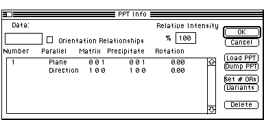
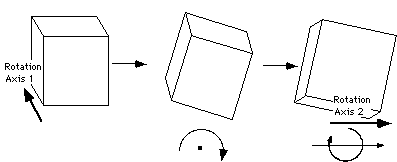

Desktop
Manual
Desktop
Manual
Defining An Orientation Relationship.

Figure 6
Precipitate Orientation Dialog Box
Orientation relationships are accomplished via the PPT Info or orientation
relationship dialog box. Proper use of this dialog box helps Desktop Microscopist
accurately calculate diffraction patterns for twins, crystals related by
a martensitic transformation and solid state precipitates. It is possible
to define rational (standard solid state precipitation reactions) and irrational
orientation relationships. Setting a rational orientation relationship is
accomplished by setting parallel two sets of two non-tangential planes or
directions, one from each crystal. This action is described in figure 6.
An irrational orientation relationship is described by first orienting the
planes, as for a rational orientation relationship and then rotating the
crystals about the first axis (either the plane normal pole or the direction)
of the matrix crystal and then rotating the crystals about the second axis
of the matrix.

1. There is a great deal of flexibility in setting a rational orientation
relationship. It is possible to set either planes or directions parallel
in any paired combination and the two sets of planes/directions need not
be orthogonal. The only requirement for accurate calculation of the orientation
matrix is that the angular relationship between the matrix poles be the
same as the angular relationship between the precipitate poles. For example,
it is permissible to define the following relationship for 2 cubic crystals:
100>matrix || 011>ppt
(110)matrix || (001)ppt
(the angle between the plane normal and the direction is 45° for
both crystals). However, the relationship:
<100>matrix || <011>ppt
(011)matrix || (001)ppt cannot be defined.
While in theory there is a great deal of flexibility, in practice it
is strongly suggested that an orientation relationship be defined which
uses a direction set and a plane set of poles which are orthogonal (dot
product = 0). Following this simple rule will eliminate any potential difficulties
that may occur with respect to accurate representation.
For purposes of this demonstration, set the following orientation relationship:
100>matrix || 0-1-1>ppt
(011)matrix || (100)ppt
Setting this relationship is very similar to setting the atomic positions
in the Crystal dialog box. Simply click on the values to change and type
in the proper information. However, the following points need to be made:
- Clicking on the enter box when the parallel column is active will
change the value Plane to Direction and vice versa. I
- When entering Miller indices, Desktop Microscopist supports double
digit index values. To utilize this feature a or a ,> must be
placed between each number. It is not required to place the delimiting value
if no Miller index is greater than 9.
Example: 12 9 7 is correct but
12 97 will be incorrectly interpreted by Desktop Microscopist as
(12 97 0)..
Entering Negative Miller Indicies
To enter a negative value hold the option key while pressing the
desired number.
The Variant button and the definition of more than one orientation relationship
are discussed in detail under the Orientation Dialog Box.
Author:James T. Stanley J.
Stanley
Desktop
Manual
Distributed By: Virtual
Labs
Last Updated:1/12/96 Sat, Apr 27, 1996